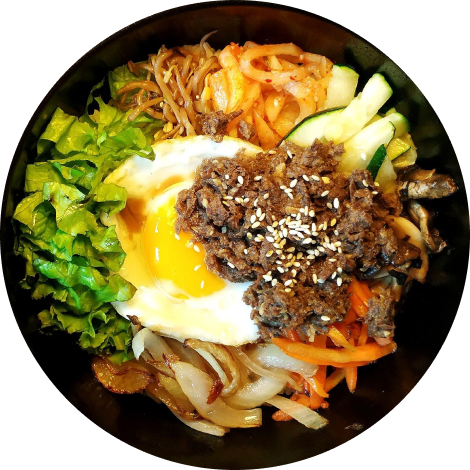
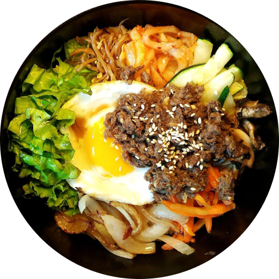
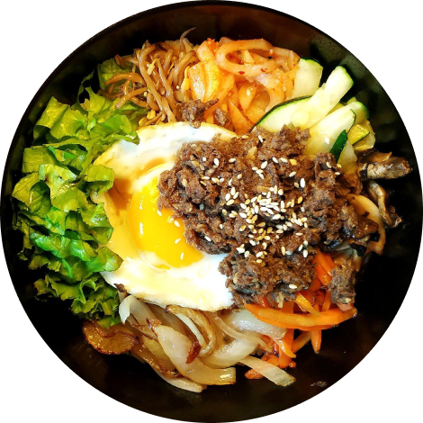

《食堂》提供韓國料理食譜可以學習，從家常菜、電鍋料理、懶人快手菜等通通有。
不想做只想吃也沒關係，我們開設家庭私廚服務，三五好友一起齊聚《食堂》聊天吃飯吧。
 

《食堂》提供韓國料理食譜可以學習，從家常菜、電鍋料理、懶人快手菜等通通有。
不想做只想吃也沒關係，我們開設家庭私廚服務，三五好友一起齊聚《食堂》聊天吃飯吧。

喜歡做韓國菜的台灣女子，全州生活 3 年後回到台灣。
原本只是懷念在韓國吃的食物而動手料理並分享，漸漸地受到朋友們喜愛。這裡有我在韓國最真實的飯桌風景，用心紀錄了韓國人飯桌、街景的一切。
「台灣韓式餐廳做的燉排骨很像三杯料理，但吃了金姨母做的真的回到韓國」

「只有回家才能吃到的泡菜燉鯖魚居然能在台灣吃到，真的很不可思議」

「一邊吃飯還可以聽到金姨母說的料理小故事，臨場感十足」

「台灣韓式餐廳做的燉排骨很像三杯料理，但吃了金姨母做的真的回到韓國」
「只有回家才能吃到的泡菜燉鯖魚居然能在台灣吃到，真的很不可思議」
「一邊吃飯還可以聽到金姨母說的料理小故事，臨場感十足」
隨著我們食譜文章寫得愈來愈多，私廚也穩動營運中，不時會收到朋友們的詢問。
我們整理了一些常見問題，找不到你想問的問題，歡迎聯絡我們！
食譜上的食材品項及份量均是金姨母經過多次試作調整所確認的最佳配方，若沒有特別註明可用其它食材代替，建議不要自行替換。換食材或是自行更改食譜，成品都會有差異。在此特別說明強調，「每一樣食材都有存在的意義」，更改就會影響風味與口感。
也常有人詢問：可不可以不加某樣食材？當然可以，但是不加那樣食材，成品的滋味或是口感一定會有可能因此不同。
我們在網站上可以直接填表單預約，輸入訂位資料：大人人數、小孩人數、用餐日期、用餐時間、預約菜等，閱讀並同意訂位條款。在收到您的訂金後，我們將寄送訂位資料到您的信箱。您可以將訂位加入行事曆、分享訂位資訊給您的家人朋友，或透過訂單代碼查看您的訂位紀錄。
提醒您，如果選擇訂位人數超過可訂位的人數，需要使用電話預約的方式訂位，
網路或電洽變更或取消，最晚需於預約時間前三日完成。三日前取消成功會全額退還訂金；逾時未變更或取消皆視同缺席，須訂金將不會返還。
變更預約需於上述時間內先取消預約，再重新送出預約。